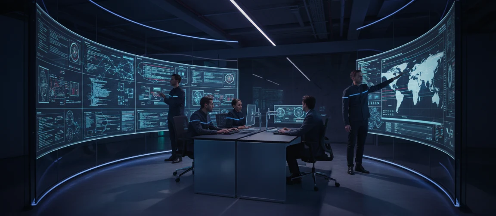

WHY WE EXIST
We remove cloud guesswork before it becomes a business risk.
Architecture, migration, security, cost, and operations are connected into one accountable delivery model.
Stackly was founded to replace cloud chaos with clear operating routes. We design, secure, and operate enterprise infrastructure so teams can move fast without carrying more risk.
.webp)

We measure success in decimals. Here is how we've helped hyper-scale teams calm their cloud operations.
Eliminated operational bottlenecks to accelerate shipping speed safely.
We find and eradicate idle resource wastage within 30 days.
We stand behind our SLAs with 24/7 proactive site reliability engineering.
Zero-downtime cutovers across complex hybrid and multi-cloud footprints.
We don't do hype. We build robust systems that respect developers, security teams, and the bottom line.
A toolshelf doesn't solve problems. We accept end-to-end operational accountability for your system metrics, from latency to the monthly invoice.
The best systems are the ones you forget exist. We design self-healing, signal-rich infrastructures that keep operational noise to an absolute minimum.
Security is never retrofitted. We bake compliance controls, network segmentation, and audit readiness into the first line of code we deliver.
Our capabilities expanded in response to real customer pressure. Each milestone added more depth to the route we now deliver end to end.
Our team grew from tactical cloud support into a full-service architecture, migration, security, and managed operations partner.
We now support architecture design, migration execution, compliance readiness, FinOps discipline, observability, and 24/7 managed operations.
We began by stabilizing broken deployments, reducing outages, and turning fragmented cloud environments into readable, supportable systems.
We formalized landing zones, audit-ready controls, and zero-trust patterns so engineering velocity no longer came at the expense of trust.
New practices around rightsizing, cost mapping, and platform standardization helped clients cut waste while moving more workloads to production.
The offering matured into an end-to-end operating model with proactive SRE, incident response, and clearer ownership after launch.
Clients now engage us for strategic planning, execution, compliance posture, cost control, and long-term operational resilience under one accountable partner.
We are senior engineers, veteran site reliability specialists, and system designers.
Book a 30-minute route audit and leave with a written plan - no strings.